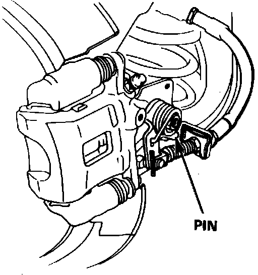
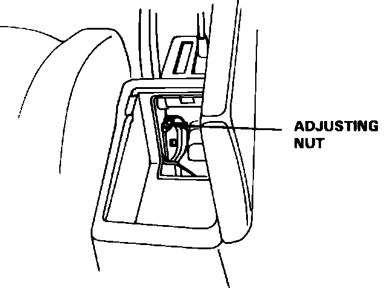

Parking Brake System: Adjustments
After servicing rear brakes, depress brake pedal several times to set self-adjusting brakes before adjusting parking brake cable. On Legend models, actuate brake pedal with engine running and parking brake cable adjustment nut loosened.
1. Block front wheels, then raise and support rear of vehicle.
Fig. 2 Parking brake cable attachment. Legend:

2. Ensure rear caliper is in contact with pin, Fig. 2.
Fig. 4 Parking brake adjusting nut. Legend:

3. Pull parking brake lever up one notch, then tighten equalizer adjusting nut, Fig. 4, until rear wheels drag slightly when turned.
4. Release parking brake lever and ensure rear wheels do not drag when turned. When properly adjusted, rear brakes should be fully applied when parking lever has traveled 4-8 clicks on Integra models, or 7-11 clicks on Legend models.